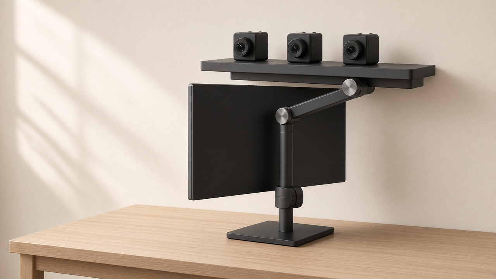
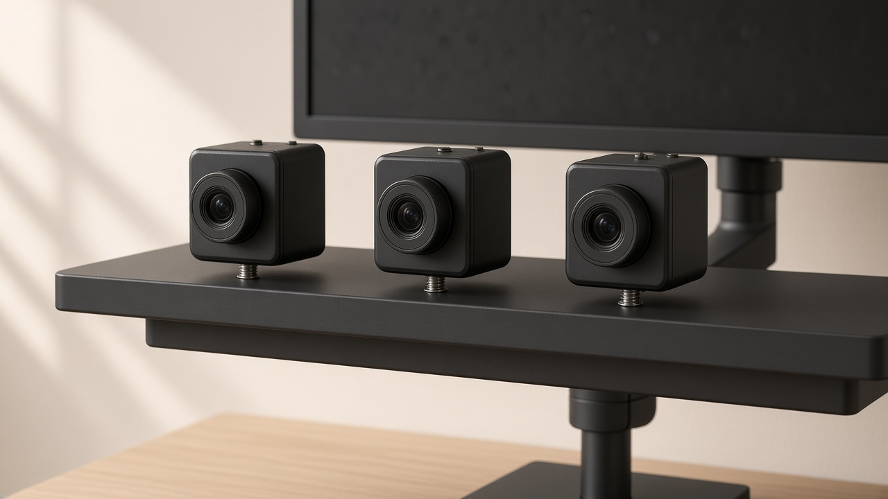
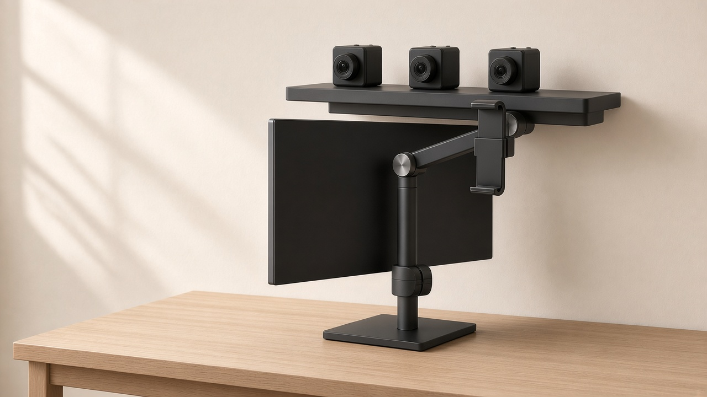
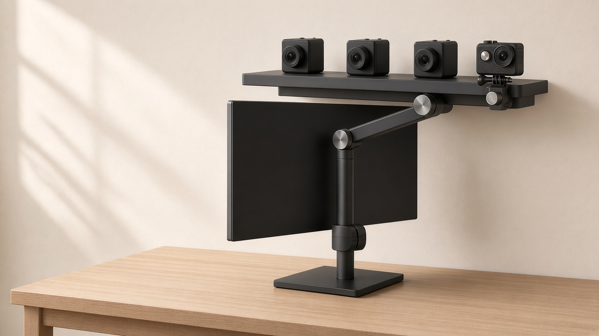

Behind the monitor.
Three cameras on one shelf. The shelf clamps to the column of the stand.

- 3cameras
- 2hinges
- 1/4"each screw
One screw from below.
Each camera sits on a 1/4"-20 screw that comes up through the plate and stops about 5 mm into the tripod socket. Slots let the spacing move between 70 and 110 mm.

The cradle takes the same stud.
The phone holder has one ear and one hole. The ear sits in a pocket on a stud at the side of the upper link, so the three camera places stay empty.

GoPro uses a bought buckle.
The camera has two fingers, not a threaded socket. A three-prong buckle with a 1/4"-20 thread screws onto a stud at the end of the shelf. You print the stud. You buy the buckle.

Specs
- Column
- 40.2 mm wide, 55.5 mm deep. A TPU band in two halves clamps it.
- Hinges
- Both turn left to right. The lower one sets height. The upper one levels the shelf.
- Shelf
- About 300 × 60 × 8 mm, PETG. Three 6.6 mm holes for 1/4"-20 screws.
- Foot
- Four M3 nuts on a 20 mm square, and one 1/4"-20 nut in the center.
- Lock
- M6 knob, a toothed disc, and steel washers. PETG on PETG creeps.
The band, the coupon, and the block are what the repository builds today. The arm and the shelf are the design in these pictures.